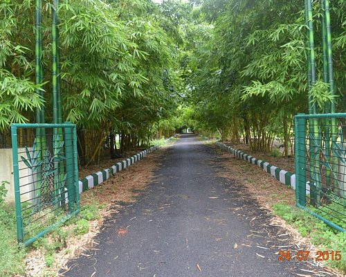

Amravati Dam
Bambu Garden

Ambadevi-temple-in-amravati

Tadoba Tiger reserve

In 1983, Amravati city became Vidarbha's second Municipal corporation.[6] Located about 663 (412 mi) kilometers east of the state capital Mumbai and 152 (94 mi) kilometers west of Nagpur, Amravati is the second largest city of the Vidarbha region after Nagpur.
| Month | Temperature | Rain |
|---|---|---|
| Jan | 14-31 | 8days |
| Feb | 17-34 | 7days | Mar | 20-38 | 8days | Apr | 25-41 | 8days |
| May | 28-43 | 4days |
| jun | 26-36 | 7days | jul | 25-32 | 12days | aug | 31-24 | 13days |
| sep | 24-31 | 8days |
| Nov | 18-34 | 7days | Dec | 14-32 | 8days |